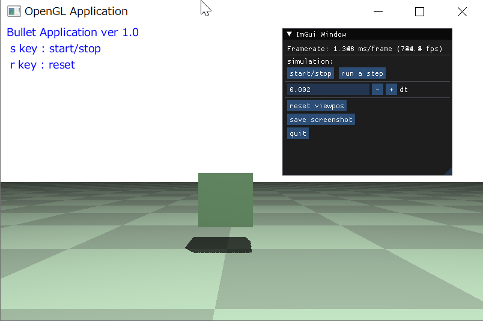
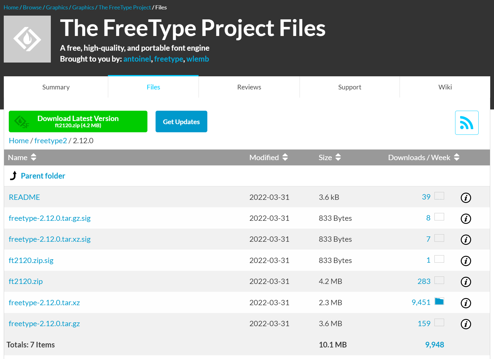
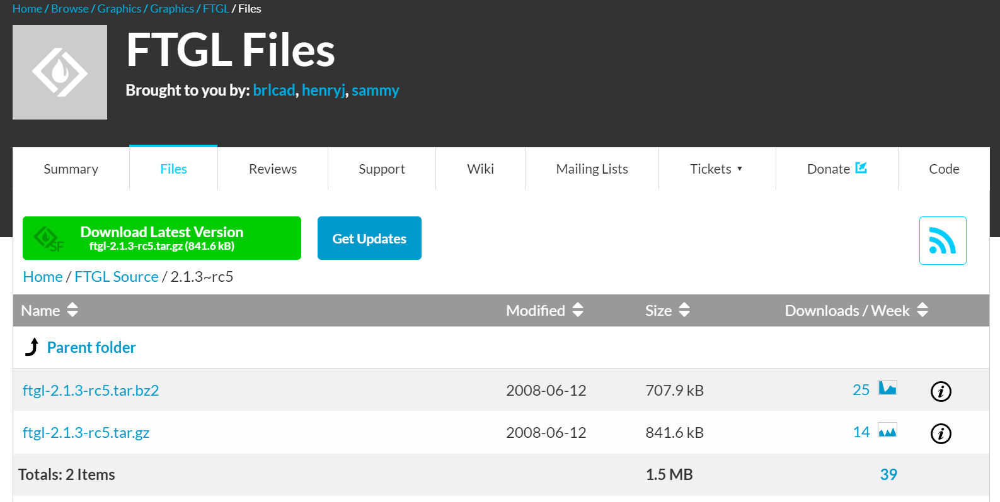
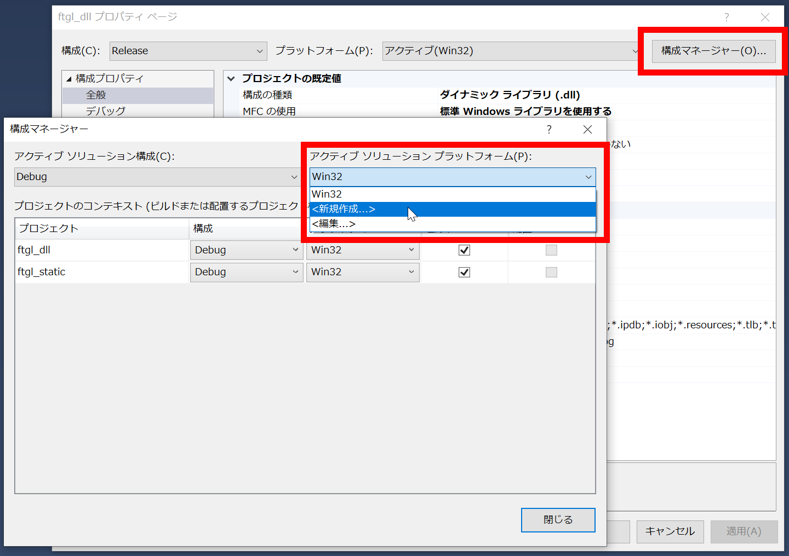
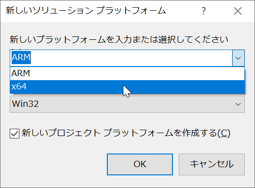

プログラム上のパラメータや操作方法などをユーザに提示するために， 画面上に文字列を描画することはアプリケーション作成の際に必要となるテクニックのひとつである． ここではOpenGLを使って画面上に文字列を描画する方法として，FTGLを用いた方法について述べる．

FTGLで文字列を描画した例
FTGLを使った方法
GLUTで文字列を簡単に描画することはできるものの，使えるフォントが限られていたり，日本語が扱えないなど制限も多い． これらを解決する方法としてここではFTGL(とfreetype)を用いた方法について述べる．
FLGLは OpenGLで文字列をレンダリングするためのオープンソースのC++ライブラリであり， フォントファイルを用いて任意のフォントを指定でき，様々なレンダリング方法(bitmap, pixmap, texture map, polygon meshなど) をサポートしている． FTGLはフォントの読み込みなどにfreetypeを用いているので，FTGLを用いるためにはまずfreetypeをビルドする必要がある．
freetypeとFTGLのビルド
freetypeとFTGLをビルドする手順を以下に示す．
-
SourceForgeのFreeTypeのページ
から最新のfreetypeをダウンロードする(ft*.zip)．
2022年4月時点の最新は2.12.0(ft2120.zip)．
(freetype2 -> 2.12.0 -> ft2120.zip とたどる)．

- ft*.zipを解凍する．できたフォルダ(freetype-2.12.0など)内のbuilds/windows/vc2010/freetype.slnを Visual Studio で開き，ソリューション構成を"Release"&"x64"にして，ビルドする．
- ビルドが成功したら，objs/x64/Releaseにfreetype.libとfreetype.dllができていることを確認する．
-
SourceForgeのFTGLのページ
から最新のFTGLをダウンロードする(ftgl-*.tar.gz)．
2022年4月現在の最新は2.1.3 RC5(ftgl-2.1.3-rc5.tar.gz)．
(FTGL Source -> 2.1.3~rc5 -> ftgl-2.1.3-rc5.tar.gzとたどる)．

- ftgl-*.tar.gzを解凍する．できたフォルダ(ftgl-2.1.3~rc5など)内のmsvc/vc8/ftgl.slnを Visual Studioで開く．プロジェクトとソリューションの変更ウィザードが出るので， OKをクリックして変換する．
-
2つのプロジェクト(ftgl_dllとftgl_static)があるが，ここではftgl_dllを用いる．
プロジェクト名のところを右クリック -> プロパティでftgl_dllのプロジェクトの設定を以下のように変更し，ビルドする．
- 構成 : Release
- 構成マネージャー : 右上の「構成マネージャー」ボタンをクリックして，アクティブソリューションプラットフォームのところで新規作成を選択(左下図参照)．
右下図のようなウィンドウが出たら，「新しいプラットフォームを入力または選択してください」で「x64」を選択して，OKボタンをクリックする．
 
- 構成プロパティ -> C/C++ -> 全般 -> 追加のインクルードディレクトリ : 先ほど解凍したfreetypeの中のincludeフォルダを指定
- 構成プロパティ -> リンカー -> 全般 -> 追加のライブラリディレクトリ : 先ほど解凍したfreetypeの中のobjs/win32/vc2010フォルダを指定
- 構成プロパティ -> リンカー -> 入力 -> 追加の依存ファイル : freetype235.libをfreetype.libに変更
- ビルドが成功したら，msvc/buildにftgl.dll, ftgl.libができていることを確認する．
プロジェクトの設定
インクルード，ライブラリファイルを適切な場所にコピーして，自分のプロジェクトから読み込めるように設定する．
- freetypeを解凍したフォルダのincludeフォルダ内のファイルとフォルダをshared/incに， FTGLを解凍したフォルダのsrcフォルダ内のFTGLフォルダをインクルードディレクトリ (メディア実験用のサンプルではshared/inc)にコピーする．
- 上記でビルドしたfreetype.libとftgl.libをライブラリディレクトリ (メディア実験用のサンプルではshared/lib)， freetype.dllとftgl.dllを実行ディレクトリ(bin)にコピーする．
-
自分のプロジェクトを開き，プロジェクトのプロパティ -> 構成プロパティ -> リンカー -> 入力の
追加の依存ファイルにfreetype.libとftgl.libを設定する，
もしくは，
ソースコードに以下のように記述する．
#pragma comment (lib, "freetype.lib") #pragma comment (lib, "ftgl.lib")
FTGLによる文字列描画
ここまででFTGLで文字列を描画するための準備が整った． 最後に文字列描画のためのコード例を示す．
FTGLを使うためには，まず以下のようにヘッダをインクルードする．
#include <FTGL/ftgl.h>
次にフォントファイルへのパスとFTGLのインスタンス，フォントサイズを格納する変数をグローバルで定義する．
#define FONT_FILE "C:\\Windows\\Fonts\\msgothic.ttc" static FTPixmapFont* g_font; unsigned long g_fontsize = 18; // フォントサイズ
ここではフォントファイルとしてMSゴシックを指定してある． そのほかにもWindowsならメイリオ("C:\\Windows\\Fonts\\meiryo.ttc")や フリーフォントのVLゴシック， 日本語を使わないならばInconsolataなどもお勧めである．
FTPixmapFontはpixmapで文字列描画する． 詳しくは，FTGLのチュートリアル参照． ちなみにpixmapはbitmapが1bit/pixelで描画するのに対し， 8bit/pixelで描画するのでより滑らかな描画となる．
以下にこれらの変数を使って文字列を描画する関数を示す．
/*!
* 文字列描画
* @param[in] str 文字列
* @param[in] w,h ウィンドウサイズ
* @param[in] x0,y0 文字列の位置(左上原点のスクリーン座標系,文字列の左下がこの位置になる)
*/
void DrawStrings(vector<string> &strs, int w, int h, int x0, int y0)
{
glDisable(GL_LIGHTING);
glMatrixMode(GL_PROJECTION);
glPushMatrix();
glLoadIdentity();
gluOrtho2D(0, w, h, 0);
glMatrixMode(GL_MODELVIEW);
glPushMatrix();
glLoadIdentity();
glRasterPos2f(x0, y0);
// フォントの初期化
if(!g_font){
g_font = new FTPixmapFont(FONT_FILE);
if(g_font->Error()){
cout << "Failed to open font " << FONT_FILE << endl;
delete g_font;
g_font = 0;
}
else{
g_font->FaceSize(g_fontsize);
}
}
// FTGLで文字列を描画
if(g_font){
for(int j = 0; j < (int)strs.size(); ++j){
glRasterPos2f(x0, y0);
strs[j].push_back('\0');
g_font->Render(strs[j].c_str());
y0 += g_font->LineHeight();
}
}
glPopMatrix();
glMatrixMode(GL_PROJECTION);
glPopMatrix();
glMatrixMode(GL_MODELVIEW);
}